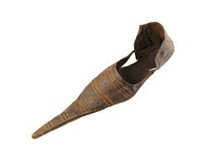

"Shoes and fashion are often seen as a status symbol, dating back to ancient times to even today.
Now entering the Medieval Era, which was around the 1400s, is where a real shift in shoe making comes.
While most people wore leather or wooden shoes and the upper class and nobles wore pointed shoes called
poulaines, which at times could extend up to 24 inches in length, because it was a sign of status and the longer
the toe, the higher the status."

"Now, during a period of time around the 18th and 19th century is where a significant change in shoes started because of the rapid technological advancements at the time. During this time shoes became more symmetrical, by having distinct left and right shoes, satin and silk became more of a common material amongst the people in Europe and they were made to be sturdier and shorter while also having decorative options. But a lot of things changed during the Industrial Revolution. This allowed for the mass production of materials, products and shoes to become cheaper and more affordable for the common people. Cobblers (traditional shoemakers) ended up being replaced by factories except for some luxury high-class brands and shoemakers. This is when the emergence of rubber soles began, which led to the first sneaker being made which forever changed the shoes industry. Entering the 20th century is where a lot of the designs and brands that we know today started, and things like functionality, fashion and technology started to take place more in footwear. Styles like loafers began to become popular with men while small heeled and pointed toe shoes became popular with women. But around this time is when sneakers gained popularity with the emergence of brands like Converse in 1908 which revolutionized the sneaker world at the time, and then later brands like Adidas and Nike would follow along and become even bigger and introduce things like the air cushion soles. But designer brands like Prada, Louis Vuitton and Gucci would bring Luxury sneakers to the market, expanding the world of sneakers even more and eventually Nike would create the one of the big bangs of sneaker culture by introducing the Air Jordan.